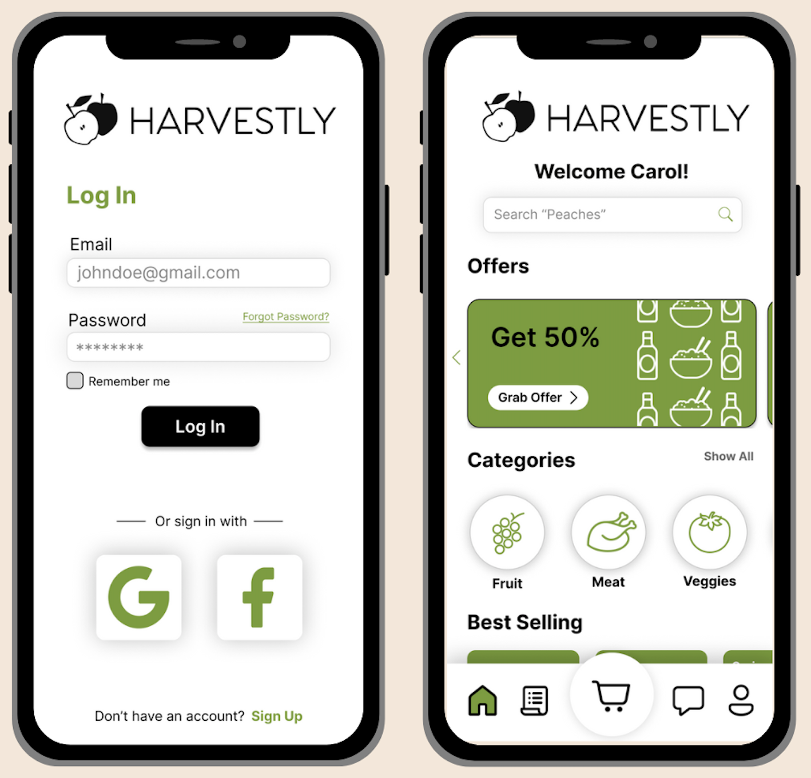
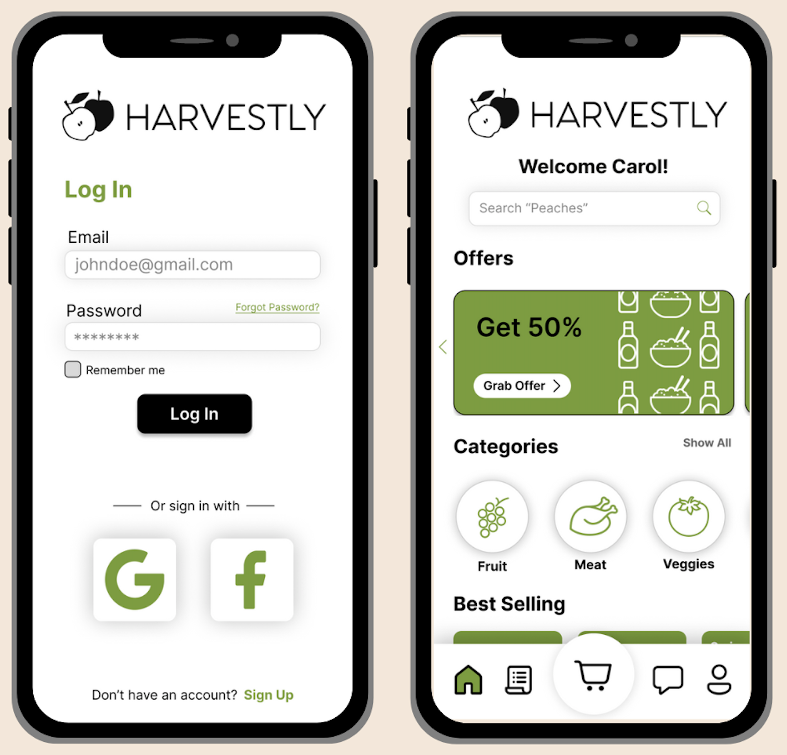
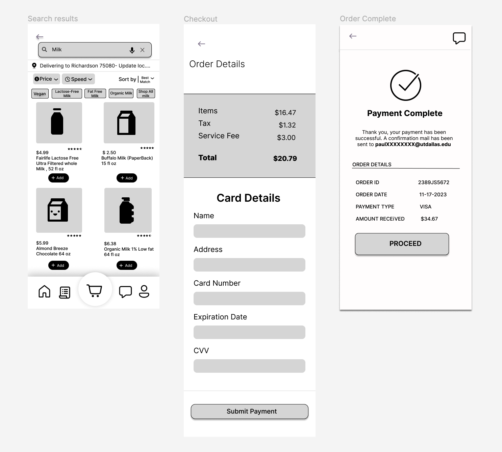

Case Study - Harvestly
Case Study
Harvestly
 


I took MIS 6396 User Experience Design at UT Dallas in Fall 2023 because I
am currently pursuing an MS in Applied Cognition and Neuroscience with a
specialization in Human-Computer Interactions. The course's focus was on
applying user experience priciples to industry product design. Throughout
the duration of the semester we worked in teams to create a prototype and
presentation for a product that we invented.
My team decided to create Harvestly, a mobile application that serves as a marketplace for locally sourced groceries.
My team decided to create Harvestly, a mobile application that serves as a marketplace for locally sourced groceries.
Role
UX Designer
Location
Richardson, TX
Challenge
The assignment was to conceptualize a new product, conduct relevant
research, design a prototype, and present the concept to the class.
Approach
Ideate
As a group of seven, we each proposed our own idea for a mobile
application and provided a proposed customer journey map. I proposed an
assistant application for building and maintaining regular habits.

We conducted a group vote and decided to move forward with a marketplace
application for locally sourced goods.
Empathize
We brainstormed a few key markets that our app would target.
I created a user persona for the dietician market.
Protoype

Test
We used an iterative design process by making several versions of the wireframes.
After each version was created, we tested the designs by interacting with them in the prototype view in Figma.
We created another version after testing to address each comment. After several iterations, our wireframes became more robust.
Solution
After the wireframing process, we built out the final prototype for submission.
This is when we started adding consistent styling and routing.
We completed another series of iterations to test the designs before submitting.
Takeaway
This project was a great opportunity to gain experience completing the UX design process.
I learned how to ideate new product ideas, conduct market research, create wireframes, iterate on designs, and create high-fidelity prototypes.
My professional experience is in accepting the high-fidelity prototypes from UX designers and bringing them to life.
I was invested in this project because I was able to learn how the high-fidelity prototypes are created.
Understanding and having experience in UX design is imperative for UX engineering.
Great products are created with one seamless vision across collaborators.
Understanding and having experience in UX design is imperative for UX engineering.
Great products are created with one seamless vision across collaborators.